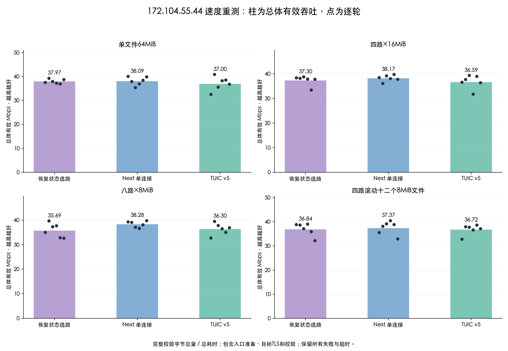

2026-11-23 · HONOR TFY-AN00 / Android12 · 同一Wi-Fi · 原生核心独立程序
冻结相同Next、CatNode TUIC服务器及安卓比较程序。恢复选路=Next双通道、自适应与RecoveryAware；单连接=Next单通道；TUIC v5=CatNode V2Core＋Mihomo原生池，未额外双开。显式BBR名称相同不代表实现、窗口及默认值一致。预算/首段副本/确认合并/0RTT/FastOpen关闭，没有调参。不是严格等连接数或单独线格式极限实验。
每项六轮、六种测试顺序各一次；19451/19458端口交叉，每配置每端口三轮。每组重启服务并冷却5秒，关闭逐包/选路日志和请求快照。串行或单文件场景恢复配置未必用到第二通道，所以差异不能直接归因恢复算法。既有业务不迁移或重放。真实恢复信号来自本端已发包判丢/RTT，没有新增服务器下行恢复反馈。
固定目标位于同VPS，HTTPS/TLS1.3且证书校验开启；相同临时证书与实验根，不装到系统。服务端临时hosts映射只供目标嗅探后的域名解析。原有服务不停止或覆盖，因此仍有共享CPU、其他业务和公网时段影响。服务器环境、原监听及每组资源快照均保留。

| 任务 | 配置 | 轮数 | 完整校验文件 | 总体Mbps | 逐轮中位Mbps | 最慢轮Mbps | 最快轮Mbps |
|---|---|---|---|---|---|---|---|
| 单文件64MiB | 恢复状态选路 | 6 | 6/6 | 37.97 | 37.76 | 36.97 | 39.37 |
| 单文件64MiB | Next 单连接 | 6 | 6/6 | 38.09 | 38.21 | 35.43 | 40.16 |
| 单文件64MiB | TUIC v5 | 6 | 6/6 | 37.00 | 37.62 | 32.62 | 40.92 |
| 四路×16MiB | 恢复状态选路 | 6 | 24/24 | 37.30 | 37.99 | 33.44 | 38.76 |
| 四路×16MiB | Next 单连接 | 6 | 24/24 | 38.17 | 38.25 | 36.09 | 39.72 |
| 四路×16MiB | TUIC v5 | 6 | 24/24 | 36.59 | 37.11 | 31.74 | 39.36 |
| 八路×8MiB | 恢复状态选路 | 6 | 48/48 | 35.69 | 36.15 | 32.65 | 39.72 |
| 八路×8MiB | Next 单连接 | 6 | 48/48 | 38.28 | 38.59 | 36.56 | 39.81 |
| 八路×8MiB | TUIC v5 | 6 | 48/48 | 36.30 | 36.73 | 32.73 | 39.51 |
| 四路滚动十二个8MiB文件 | 恢复状态选路 | 6 | 72/72 | 36.84 | 37.94 | 32.23 | 39.08 |
| 四路滚动十二个8MiB文件 | Next 单连接 | 6 | 72/72 | 37.37 | 38.53 | 32.96 | 40.51 |
| 四路滚动十二个8MiB文件 | TUIC v5 | 6 | 72/72 | 36.72 | 37.41 | 32.84 | 38.63 |
总体有效吞吐=所有完成校验的字节总量/全部轮次耗时，包含入口准备、目标TLS、接收与校验。不是峰值或各轮速度的算术平均；未完成文件不当成完整成果，等待和失败保留。红叉代表不完整组。每组新客户端，单文件与并发均保持相同目标任务总量64MiB；滚动96MiB独立列出。
| 任务 | 配置 | 完成/记录数 | 完成P50 ms | 完成P95 ms | 首字节P50 ms | 首字节P95 ms |
|---|---|---|---|---|---|---|
| 单文件64MiB | 恢复状态选路 | 6/6 | 14147.00 | 14521.00 | 346.00 | 363.00 |
| 单文件64MiB | Next 单连接 | 6/6 | 13956.00 | 15151.00 | 329.00 | 361.00 |
| 单文件64MiB | TUIC v5 | 6/6 | 14008.00 | 16458.00 | 355.00 | 419.00 |
| 四路×16MiB | 恢复状态选路 | 24/24 | 13554.00 | 15787.00 | 213.00 | 347.00 |
| 四路×16MiB | Next 单连接 | 24/24 | 13840.00 | 14732.00 | 215.00 | 319.00 |
| 四路×16MiB | TUIC v5 | 24/24 | 14246.00 | 16915.00 | 377.00 | 525.00 |
| 八路×8MiB | 恢复状态选路 | 48/48 | 13225.00 | 15957.00 | 222.00 | 507.00 |
| 八路×8MiB | Next 单连接 | 48/48 | 13615.00 | 14323.00 | 227.00 | 1287.00 |
| 八路×8MiB | TUIC v5 | 48/48 | 14534.00 | 16265.00 | 503.00 | 1736.00 |
| 四路滚动十二个8MiB文件 | 恢复状态选路 | 72/72 | 6616.00 | 8354.00 | 227.00 | 410.00 |
| 四路滚动十二个8MiB文件 | Next 单连接 | 72/72 | 6946.00 | 8704.00 | 223.00 | 412.00 |
| 四路滚动十二个8MiB文件 | TUIC v5 | 72/72 | 7182.00 | 9729.00 | 289.00 | 733.00 |
仅成功文件进入延迟分位数，失败数同时列出。滚动单文件计时从拿到工作槽位开始，不包含此前排队；整组耗时包含全部队列完成。此处首字节是大下载任务里的辅助观察，不替代154的延迟专测。
| 配置 | 流数 | 轮数 | 成功流 | 接收Mbps中位 | 分配B/校验接收B | HeapAlloc MiB中位 |
|---|---|---|---|---|---|---|
| 恢复状态选路 | 1 | 6 | 6/6 | 11.53 | 1.32 | 10.27 |
| 恢复状态选路 | 4 | 6 | 24/24 | 10.45 | 1.51 | 8.22 |
| Next 单连接 | 1 | 6 | 6/6 | 12.18 | 1.25 | 10.06 |
| Next 单连接 | 4 | 6 | 24/24 | 10.49 | 1.38 | 14.00 |
| TUIC v5 | 1 | 6 | 6/6 | 9.93 | 1.53 | 8.98 |
| TUIC v5 | 4 | 6 | 24/24 | 9.33 | 1.57 | 8.57 |
同时发送并接收回显，数据阶段在准备完成后计时；它不是纯上传，也不与端到端下载吞吐直接合成。HeapAlloc是Go阶段末快照，受GC和吞吐影响，不是峰值RSS或耗电。
| 任务 | 配置 | 快照数 | MemoryPeak中位MiB | CPUUsage中位秒 |
|---|---|---|---|---|
| 单文件64MiB | 恢复状态选路 | 6 | 10.69 | 1.01 |
| 四路×16MiB | 恢复状态选路 | 6 | 18.51 | 1.42 |
| 八路×8MiB | 恢复状态选路 | 6 | 23.05 | 1.33 |
| 四路滚动十二个8MiB文件 | 恢复状态选路 | 6 | 17.34 | 2.15 |
| 单文件64MiB | Next 单连接 | 6 | 11.39 | 1.01 |
| 四路×16MiB | Next 单连接 | 6 | 17.42 | 0.98 |
| 八路×8MiB | Next 单连接 | 6 | 27.66 | 1.03 |
| 四路滚动十二个8MiB文件 | Next 单连接 | 6 | 15.56 | 1.70 |
| 单文件64MiB | TUIC v5 | 6 | 16.42 | 1.21 |
| 四路×16MiB | TUIC v5 | 6 | 24.19 | 1.10 |
| 八路×8MiB | TUIC v5 | 6 | 38.52 | 1.18 |
| 四路滚动十二个8MiB文件 | TUIC v5 | 6 | 28.84 | 1.73 |
数据来自阶段结束后的systemd服务统计，包含服务启动和准备开销；只覆盖该入口服务，不含本地HTTPS目标、系统或客户端，不能等同净协议CPU成本。原始每组文件可核对。
| 轮次 | 接收字节 | 耗时秒 | 已收字节/耗时（非完整吞吐）Mbps | 错误 |
|---|---|---|---|---|
| 1 | 8011776 | 120.00 | 0.53 | context deadline exceeded (Client.Timeout or context cancellation while reading body) |
| 2 | 7110656 | 120.00 | 0.47 | context deadline exceeded (Client.Timeout or context cancellation while reading body) |
| 3 | 6422528 | 120.00 | 0.43 | context deadline exceeded (Client.Timeout or context cancellation while reading body) |
64MiB×3，TLS验证开启；只有完整64MiB且哈希匹配才算完成。目前必须同时查看接收字节和错误，部分文件的字节/耗时不能当作完整下载吞吐或网络上限。主测试结束后单独进行，没有与代理流量同时争用。此三次对照均未完成，不能用部分字节速率判定带宽上限。服务器TCP快照显示CUBIC、cwnd6、重传/重排序；三种代理则是QUIC/BBR，时间、拥塞控制、封装和连接结构不同，不能单凭该快照认定全部根因。
冻结计划和SHA256 · 时间线 · 汇总 · 全部CSV · 逐轮下载 · 分端口切片 · 配对整轮探索性重采样 · 自检与清理 · 复现说明
六对样本的区间仅探索，不作正式显著性结论。所有原始失败、慢轮保留。此处仅安卓Wi-Fi原生核心，非正式App/TUN、蜂窝、锁屏能耗或隐蔽性验收。结束恢复手机VPN，清理临时服务与私钥。